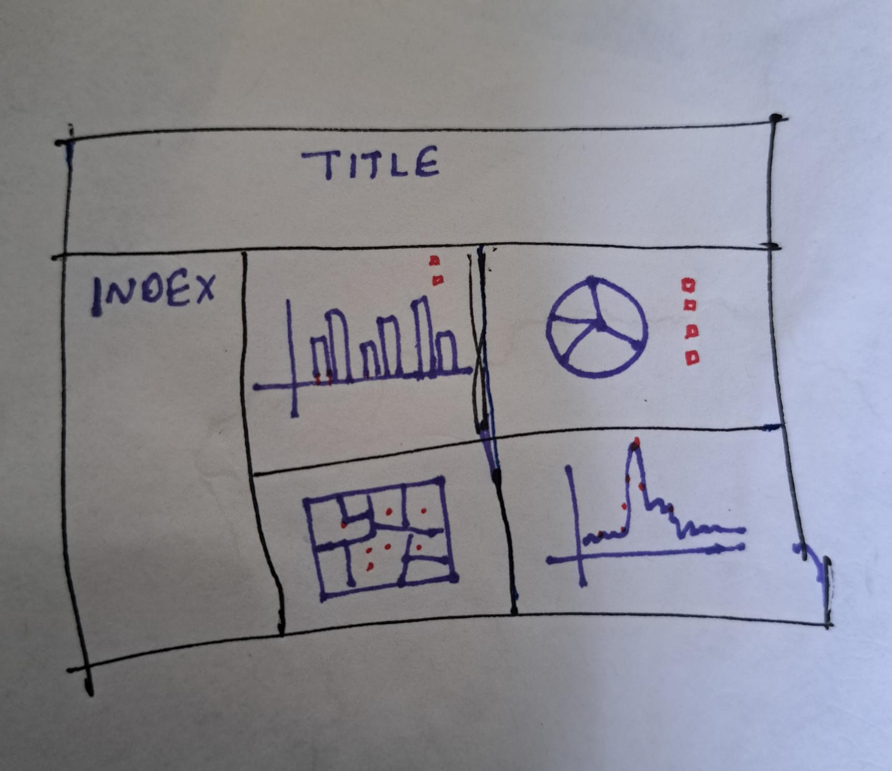
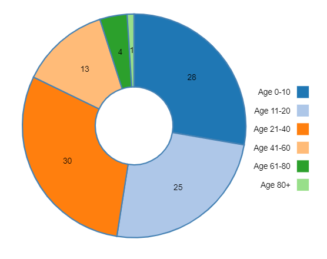
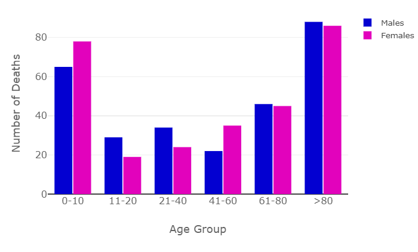
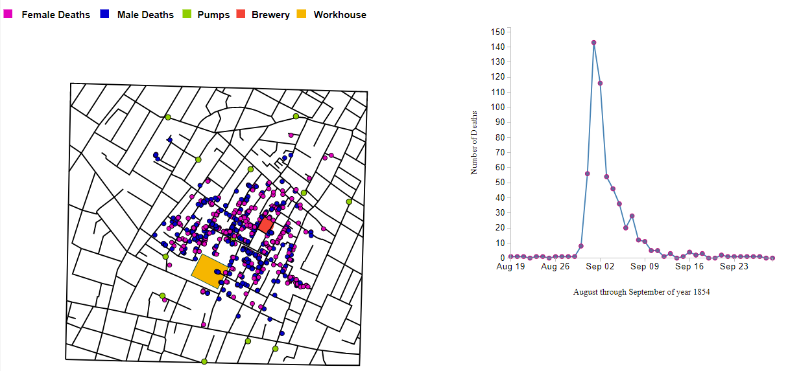

Introduction
Cholera epidemic map by Dr. John Snow is a visual representation of London's 1854 cholera cases. The objective of this project is to recreate an interactive version of Dr. John Snow's cholera epidemic map in London from 1854, which should be achieved using D3, HTML, CSS and JS. Interactive graphics is used to explain the map, which can be benefical in identifying the root causes of issues. The dataset consists of four files providing the coordinates of streets and pumps where daily deaths occured, including attributes such as age and gender.
Design Process:
- Initially design the page layout, figuring out which graph can fit better in the specific section. Then created a navigation bar to add documentation and youtube video links. With the help of this structure created the base page [12], [13]. 
- First major aim was to visualize the given data in the form charts/graphs. Used a pie chart to show distribution of deaths age group wise, simply conveterd to a donut shape by adding inner circle. As the data was available in percentage form it was best to show that using a pie chart. (issue noticed, the given data does not add up to 100%) Used a color code category and also specified the legends [1], [2], [9]. 
- To show number of deaths in each age group as well as the male-female death distribution used a bar chart, where females are represented in pink and males are represented in blue. Results shows that the highest deaths observed are in youngest (0-10 yrs) and oldest (80+ yrs) age groups [5], [6], [7]. 
- Given the London's street details, a soho map of cholera epidemic deaths is plotted which shows the male-female death distribution across the city, also shows location of pumps, brewery and warehouse with different color codes [8]. The dashboard also shows an interactive timeline graph of cholera epidemic deaths from August to September 1854. By selecting the timeframe window you can see the number of deaths on the map. We see there is a peak in the month of september, which is 143 deaths noted highest of the day. On the map along with male-female deaths, pumps, brewery and warehouse is also highlighted. There is also a zoom in and zoom out feature on the map to see the locations closely [14]. 
References
- https://stackoverflow.com/questions/32422325/d3-scale-category20-is-too-smart-for-me
- https://gist.github.com/cnaithani/1ceda79527a698950d60628ed935d745
- https://d3-graph-gallery.com/
- https://www.w3schools.com/
- Book: Interactive Data Visualization for the Web, by Scott Murray.
- Book: Visualization, Analysis and Design, by Tamara Munzner.
- https://www.youtube.com/watch?v=Hq4c8-Bmj7s
- https://ralucanicola.github.io/cholera-map-3D/
- https://codepen.io/Arunabh_28/pen/awoemj
- https://d3-graph-gallery.com/graph/interactivity_tooltip.html
- https://www.color-hex.com/
- https://www.w3schools.com/html/html_layout.asp
- https://www.w3schools.com/css/css3_buttons.asp
- https://github.com/wbkd/d3-extended